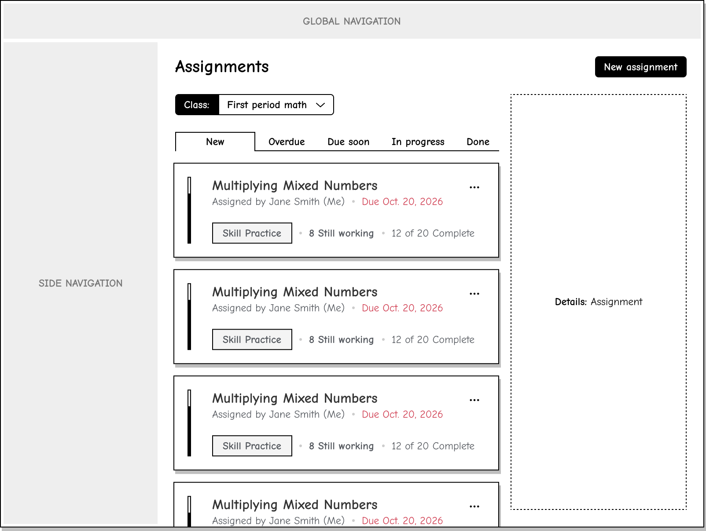

Case study
Teachers see who needs support
I replaced a dense assignments table with a priority view so K-12 teachers could find the students who needed attention.
More than 40% of U.S. schools rely on Renaissance for learning data and insights.
- Role
- Senior UX Designer
- Team
- Product manager, product owner, three engineers, and UX research partners
- Timeline
- Four weeks of research and design, followed by two weeks of development
- Outcome
- Met the initiative's hub-adoption goal and reduced transitions to individual-product reports
Research showed where the page fell short
The first version brought assignments from several products into one place, but it did not help teachers act. A teacher could see that eight of ten students had finished, then still had to open another report to identify the two who had not.
Our UX research partners ran moderated studies with five active Renaissance users and five teachers new to the product suite. Participants reviewed the existing page and two prototypes, found specific assignments, and explained how they would use the feature in the classroom. Teachers had to sort and filter the table before they could identify students who needed help. They also prioritized due date over assigned date when deciding what to address first.

A shared model clarified the interface
Each practice and assessment product had its own assignment data. I facilitated an object-modeling workshop with product and engineering partners to define the shared assignment object, its product-specific differences, and the information teachers needed in the classroom.
Every assignment had a title, type, assigned date, and due date. Some attributes varied by product, such as questions answered or pages read. The interface needed to surface the shared information first while retaining product context through labels and icons.

I replaced the table with a priority view
I replaced the table with grouped lists. The table offered controls, but it left teachers to decide what to sort and filter before they could act.
The final design placed new assignments first, then grouped the remaining work by overdue, due soon, in progress, and done. Teachers could expand or collapse each group. Every participant in the study validated this model. One teacher responded, “OMG, this is amazing.”

The final design kept student progress in context
Teachers could scan by urgency and open an assignment without leaving the hub. The expanded view showed who had started, finished, or still needed support.
Interactive reconstruction of the final design. Student names and results are illustrative.
 New assignments (1)
New assignments (1)
 Skill Practice: Symmetry & TransformationsDue 9/27
Skill Practice: Symmetry & TransformationsDue 9/27
| Benjamin Frost | Completed in 24m | 9 / 12 (75%) |
|---|---|---|
| Caleb Nguyen | Not started | — |
| Diego Fuentes | Not started | — |
| Elena Voss | In progress | 3 / 12 (25%) |
| Fatima Khan | In progress | 5 / 12 (42%) |
| Gabriel Ortiz | In progress | 7 / 12 (58%) |
| Harper Lee | In progress | 3 / 12 (25%) |
Overdue (2)
 Reading Activity: The Long Winter, Chapter 4Due 9/17
Reading Activity: The Long Winter, Chapter 4Due 9/17
| Diego Fuentes | In progress | 19 of 32 pages |
|---|---|---|
| Elena Voss | Completed in 17m | 29 of 32 pages |
| Fatima Khan | Completed in 20m | 31 of 32 pages |
| Gabriel Ortiz | Completed in 23m | 29 of 32 pages |
| Harper Lee | Not started | — |
| Isaac Moreno | Not started | — |
| Jasmine Kim | Not started | — |
Skill Practice: Fraction ModelsDue 9/18
| Elena Voss | In progress | 3 / 12 (25%) |
|---|---|---|
| Fatima Khan | Completed in 18m | 12 / 12 (100%) |
| Gabriel Ortiz | Completed in 21m | 10 / 12 (83%) |
| Harper Lee | Not started | — |
| Isaac Moreno | Not started | — |
| Jasmine Kim | Not started | — |
| Aisha Patel | Not started | — |
 Math Challenge: Area & PerimeterDue 9/19
Math Challenge: Area & PerimeterDue 9/19
| Fatima Khan | Completed in 16m | 7 / 10 (70%) |
|---|---|---|
| Gabriel Ortiz | Completed in 19m | 9 / 10 (90%) |
| Harper Lee | Not started | — |
| Isaac Moreno | Not started | — |
| Jasmine Kim | Not started | — |
| Aisha Patel | In progress | 3 / 10 (30%) |
| Amara Okafor | In progress | 4 / 10 (40%) |
Due soon (3)
Skill Practice: Equivalent FractionsDue 9/22
| Isaac Moreno | In progress | 5 / 12 (42%) |
|---|---|---|
| Jasmine Kim | In progress | 7 / 12 (58%) |
| Aisha Patel | In progress | 3 / 12 (25%) |
| Amara Okafor | Completed in 14m | 12 / 12 (100%) |
| Ava Coleman | Completed in 17m | 10 / 12 (83%) |
| Benjamin Frost | Completed in 20m | 12 / 12 (100%) |
| Caleb Nguyen | Not started | — |
Reading Activity: The One and Only Ivan, Chapter 6Due 9/23
| Jasmine Kim | In progress | 19 of 32 pages |
|---|---|---|
| Aisha Patel | Completed in 23m | 31 of 32 pages |
| Amara Okafor | Completed in 12m | 29 of 32 pages |
| Ava Coleman | Completed in 15m | 31 of 32 pages |
| Benjamin Frost | Completed in 18m | 29 of 32 pages |
| Caleb Nguyen | Not started | — |
| Diego Fuentes | In progress | 19 of 32 pages |
Math Challenge: Ratios & ProportionsDue 9/24
| Aisha Patel | In progress | 3 / 10 (30%) |
|---|---|---|
| Amara Okafor | In progress | 4 / 10 (40%) |
| Ava Coleman | Completed in 13m | 10 / 10 (100%) |
| Benjamin Frost | Completed in 16m | 8 / 10 (80%) |
| Caleb Nguyen | Not started | — |
| Diego Fuentes | Not started | — |
| Elena Voss | In progress | 3 / 10 (30%) |
In progress (5)
Skill Practice: Adding IntegersDue 9/15
| Benjamin Frost | In progress | 3 / 12 (25%) |
|---|---|---|
| Caleb Nguyen | In progress | 5 / 12 (42%) |
| Diego Fuentes | Completed in 18m | 9 / 12 (75%) |
| Elena Voss | Completed in 21m | 11 / 12 (92%) |
| Fatima Khan | Completed in 24m | 9 / 12 (75%) |
| Gabriel Ortiz | Completed in 13m | 11 / 12 (92%) |
| Harper Lee | Not started | — |
Math Challenge: Algebraic ExpressionsDue 9/16
| Caleb Nguyen | In progress | 4 / 10 (40%) |
|---|---|---|
| Diego Fuentes | Completed in 16m | 8 / 10 (80%) |
| Elena Voss | Completed in 19m | 10 / 10 (100%) |
| Fatima Khan | Completed in 22m | 8 / 10 (80%) |
| Gabriel Ortiz | Completed in 11m | 10 / 10 (100%) |
| Harper Lee | Not started | — |
| Isaac Moreno | In progress | 4 / 10 (40%) |
Skill Practice: Word RelationshipsDue 9/16
| Caleb Nguyen | In progress | 5 / 12 (42%) |
|---|---|---|
| Diego Fuentes | Completed in 16m | 10 / 12 (83%) |
| Elena Voss | Completed in 19m | 12 / 12 (100%) |
| Fatima Khan | Completed in 22m | 10 / 12 (83%) |
| Gabriel Ortiz | Completed in 11m | 12 / 12 (100%) |
| Harper Lee | Not started | — |
| Isaac Moreno | In progress | 5 / 12 (42%) |
Reading Activity: Bud, Not Buddy, Chapter 8Due 9/17
| Diego Fuentes | In progress | 19 of 32 pages |
|---|---|---|
| Elena Voss | Completed in 17m | 29 of 32 pages |
| Fatima Khan | Completed in 20m | 31 of 32 pages |
| Gabriel Ortiz | Completed in 23m | 29 of 32 pages |
| Harper Lee | Not started | — |
| Isaac Moreno | In progress | 14 of 32 pages |
| Jasmine Kim | In progress | 19 of 32 pages |
Math Challenge: Decimal OperationsDue 9/18
| Elena Voss | Completed in 15m | 8 / 10 (80%) |
|---|---|---|
| Fatima Khan | Completed in 18m | 10 / 10 (100%) |
| Gabriel Ortiz | Completed in 21m | 8 / 10 (80%) |
| Harper Lee | Not started | — |
| Isaac Moreno | In progress | 4 / 10 (40%) |
| Jasmine Kim | In progress | 6 / 10 (60%) |
| Aisha Patel | In progress | 3 / 10 (30%) |
Done (12)
Skill Practice: Sentence StructureDue 9/5
| Diego Fuentes | Completed in 16m | 11 / 12 (92%) |
|---|---|---|
| Elena Voss | Completed in 19m | 9 / 12 (75%) |
| Fatima Khan | Completed in 22m | 11 / 12 (92%) |
| Gabriel Ortiz | Completed in 11m | 9 / 12 (75%) |
| Harper Lee | Completed in 14m | 11 / 12 (92%) |
| Isaac Moreno | Completed in 17m | 9 / 12 (75%) |
| Jasmine Kim | Completed in 20m | 11 / 12 (92%) |
Math Challenge: Multiplying DecimalsDue 9/6
| Elena Voss | Completed in 17m | 8 / 10 (80%) |
|---|---|---|
| Fatima Khan | Completed in 20m | 10 / 10 (100%) |
| Gabriel Ortiz | Completed in 23m | 8 / 10 (80%) |
| Harper Lee | Completed in 12m | 10 / 10 (100%) |
| Isaac Moreno | Completed in 15m | 8 / 10 (80%) |
| Jasmine Kim | Completed in 18m | 10 / 10 (100%) |
| Aisha Patel | Completed in 21m | 8 / 10 (80%) |
Skill Practice: Context CluesDue 9/7
| Fatima Khan | Completed in 18m | 9 / 12 (75%) |
|---|---|---|
| Gabriel Ortiz | Completed in 21m | 11 / 12 (92%) |
| Harper Lee | Completed in 24m | 9 / 12 (75%) |
| Isaac Moreno | Completed in 13m | 11 / 12 (92%) |
| Jasmine Kim | Completed in 16m | 9 / 12 (75%) |
| Aisha Patel | Completed in 19m | 11 / 12 (92%) |
| Amara Okafor | Completed in 22m | 9 / 12 (75%) |
Reading Activity: Holes, Chapter 3Due 9/8
| Gabriel Ortiz | Completed in 19m | 32 of 32 pages |
|---|---|---|
| Harper Lee | Completed in 22m | 30 of 32 pages |
| Isaac Moreno | Completed in 11m | 32 of 32 pages |
| Jasmine Kim | Completed in 14m | 30 of 32 pages |
| Aisha Patel | Completed in 17m | 32 of 32 pages |
| Amara Okafor | Completed in 20m | 30 of 32 pages |
| Ava Coleman | In progress | 19 of 32 pages |
Math Challenge: Percent ProblemsDue 9/9
| Harper Lee | Completed in 20m | 9 / 10 (90%) |
|---|---|---|
| Isaac Moreno | Completed in 23m | 7 / 10 (70%) |
| Jasmine Kim | Completed in 12m | 9 / 10 (90%) |
| Aisha Patel | Completed in 15m | 7 / 10 (70%) |
| Amara Okafor | Completed in 18m | 9 / 10 (90%) |
| Ava Coleman | Completed in 21m | 7 / 10 (70%) |
| Benjamin Frost | Completed in 24m | 9 / 10 (90%) |
Skill Practice: Main IdeaDue 9/10
| Isaac Moreno | Completed in 21m | 10 / 12 (83%) |
|---|---|---|
| Jasmine Kim | Completed in 24m | 12 / 12 (100%) |
| Aisha Patel | Completed in 13m | 10 / 12 (83%) |
| Amara Okafor | Completed in 16m | 12 / 12 (100%) |
| Ava Coleman | Completed in 19m | 10 / 12 (83%) |
| Benjamin Frost | Completed in 22m | 12 / 12 (100%) |
| Caleb Nguyen | Completed in 11m | 10 / 12 (83%) |
Reading Activity: Esperanza Rising, Chapter 2Due 9/11
| Jasmine Kim | Completed in 22m | 29 of 32 pages |
|---|---|---|
| Aisha Patel | Completed in 11m | 31 of 32 pages |
| Amara Okafor | Completed in 14m | 29 of 32 pages |
| Ava Coleman | Completed in 17m | 31 of 32 pages |
| Benjamin Frost | Completed in 20m | 29 of 32 pages |
| Caleb Nguyen | Completed in 23m | 31 of 32 pages |
| Diego Fuentes | Completed in 12m | 29 of 32 pages |
Math Challenge: Coordinate PlanesDue 9/12
| Aisha Patel | Completed in 23m | 10 / 10 (100%) |
|---|---|---|
| Amara Okafor | Completed in 12m | 8 / 10 (80%) |
| Ava Coleman | In progress | 6 / 10 (60%) |
| Benjamin Frost | Completed in 18m | 8 / 10 (80%) |
| Caleb Nguyen | Completed in 21m | 10 / 10 (100%) |
| Diego Fuentes | Completed in 24m | 8 / 10 (80%) |
| Elena Voss | Completed in 13m | 10 / 10 (100%) |
Skill Practice: Prefixes and SuffixesDue 9/13
| Amara Okafor | Completed in 24m | 11 / 12 (92%) |
|---|---|---|
| Ava Coleman | Completed in 13m | 9 / 12 (75%) |
| Benjamin Frost | Completed in 16m | 11 / 12 (92%) |
| Caleb Nguyen | Completed in 19m | 9 / 12 (75%) |
| Diego Fuentes | Completed in 22m | 11 / 12 (92%) |
| Elena Voss | Completed in 11m | 9 / 12 (75%) |
| Fatima Khan | Completed in 14m | 11 / 12 (92%) |
Reading Activity: The Giver, Chapter 1Due 9/14
| Ava Coleman | In progress | 19 of 32 pages |
|---|---|---|
| Benjamin Frost | Completed in 14m | 32 of 32 pages |
| Caleb Nguyen | Completed in 17m | 30 of 32 pages |
| Diego Fuentes | Completed in 20m | 32 of 32 pages |
| Elena Voss | Completed in 23m | 30 of 32 pages |
| Fatima Khan | Completed in 12m | 32 of 32 pages |
| Gabriel Ortiz | Completed in 15m | 30 of 32 pages |
Math Challenge: VolumeDue 9/15
| Benjamin Frost | Completed in 12m | 7 / 10 (70%) |
|---|---|---|
| Caleb Nguyen | Completed in 15m | 9 / 10 (90%) |
| Diego Fuentes | Completed in 18m | 7 / 10 (70%) |
| Elena Voss | Completed in 21m | 9 / 10 (90%) |
| Fatima Khan | Completed in 24m | 7 / 10 (70%) |
| Gabriel Ortiz | Completed in 13m | 9 / 10 (90%) |
| Harper Lee | Completed in 16m | 7 / 10 (70%) |
Skill Practice: Vocabulary ReviewDue 9/16
| Caleb Nguyen | Completed in 13m | 12 / 12 (100%) |
|---|---|---|
| Diego Fuentes | Completed in 16m | 10 / 12 (83%) |
| Elena Voss | Completed in 19m | 12 / 12 (100%) |
| Fatima Khan | Completed in 22m | 10 / 12 (83%) |
| Gabriel Ortiz | Completed in 11m | 12 / 12 (100%) |
| Harper Lee | Completed in 14m | 10 / 12 (83%) |
| Isaac Moreno | Completed in 17m | 12 / 12 (100%) |
I designed for the product's technical constraints
I co-authored the requirements and owned the information architecture, interaction patterns, page content, states, prototypes, handoff, and launch planning.
The Angular page shell rendered content from a React app in an iframe, which constrained layout, filters, dialogs, and other interactions. The initial API returned aggregate completion counts only. With engineering and API owners, I added student IDs, completion time, and timeframe pre-filtering. That made student names visible in the interface while protecting page performance.
We deferred a fuller student-performance summary for a later release. Teachers wanted more detail, but adding it would have delayed the core improvement: helping teachers identify which assignments and students needed attention.
Outcome
A clearer path from status to action
After four weeks of research and design iteration and two weeks of development, Version 2 launched. It met the initiative's goal of moving users from individual products into Renaissance Intelligence. Product metrics showed fewer transitions from the Assignments page to individual-product reports, and research confirmed that the grouped view matched teachers' expectations.
The structure also left room for richer data without making the core workflow harder to scan. My takeaway: defaults should reflect how people prioritize work while keeping the underlying detail close at hand.